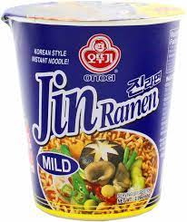

Cup Jin Ramen

A cup of mild Jin Ramen
Ingredients
a cup of mild Jin Ramen
water
kettle
Steps
Get cup of mild Jin Ramen
Fill kettle with 3 cups of water
Boil water
Fill cup of ramen to the line
Close lid and wait 4 minutes